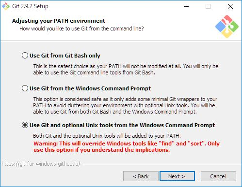
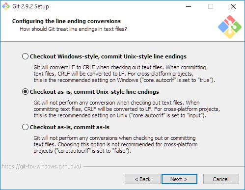
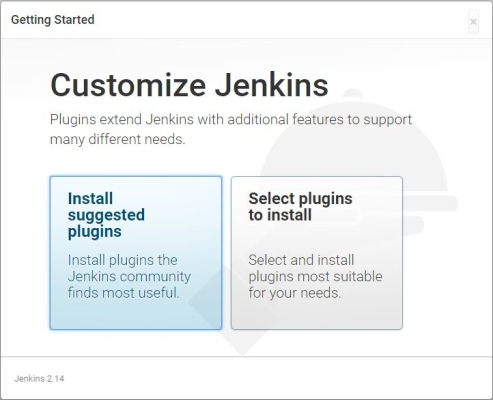
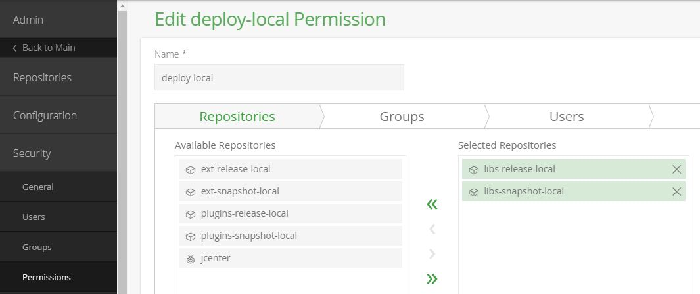
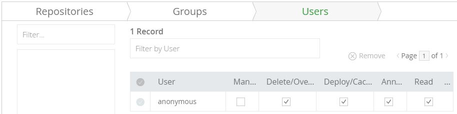
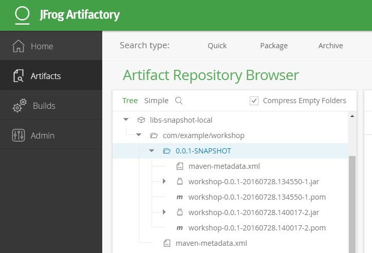
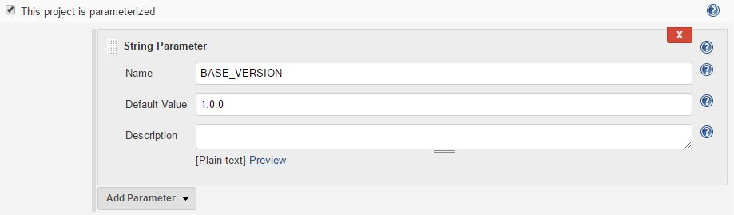
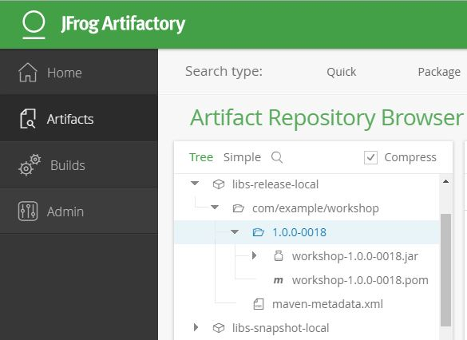

Continuous Delivery Workshop
Pipeline as Code with Jenkins
Michael Gfeller
Computas AS
www.mgfeller.net
Objectives
- Improve understanding of and knowledge about continuous delivery (CD).
- Describe the pipeline concept.
- Understand CD stack components and roles.
- Application architecture requirements for CD.
Prerequisites
- Bring your own PC.
- Some programming experience.
- Interest in DevOps.
- Active participation.
- Basic linux command line knowledge.
Outline
- Some theory about continuous delivery.
- Setting up the workshop environment.
- Implementing a simple pipeline for a given project.
- Adding new code with test first.
Continuous Delivery

Continuous ...
- Integration
- Delivery
- Deployment

Workshop Environment
- VirtualBox with server environment
- VirtualBox as Vagrant project, with Puppet
- Server: Ubuntu server w/o desktop
- Server stack: Jenkins, Artifactory, Maven, Java, Git
- Server tools: Vim (spf13-vim), ftp client
- Sample project: Spring Boot application with Maven
- Development environment locally: IDE, Git client, Java 8, Maven
Get Started!
These slides use reveal.js
Clone them from https://github.com/mgfeller/cd-jenkins-workshop-slides.
Open index.html in a browser, and choose relevant chapter.
Navigate to next slide by using the SPACE key.
See overview over all slides by pressing ESC.
Setup the server environment: follow the instructions (do not configure Jenkins and Artifactory yet) in the readme on https://github.com/mgfeller/cd-jenkins-workshop.
For git configuration on Windows, see the following slides.
Git on Windows: Path Configuration
Git on Windows: Line Ending Configuration
Setup Jenkins
Unlock Jenkins
- In browser, open http://192.168.33.10:8080/
- On command line, open ssh-shell:
ssh vagrant@192.168.33.10, password: vagrant
(or run vagrant ssh in the project folder) - Run sudo cat /var/lib/jenkins/secrets/initialAdminPassword and copy this administrator password into the field in the browser
Suggested Plugins
First Admin User
- Username: admin
- Password: 1234!abcd
- Full name: Admin
- E-mail address: vagrant@localhost
- Press 'Save and Finish'
Jenkins Location
- Jenkins > Manage Jenkins > Configure System
- Go to 'Jenkins Location'
- Jenkins URL: http://192.168.33.10:8080/
- System Admin e-mail address: vagrant@localhost
Jenkins E-mail Notification
- Jenkins > Manage Jenkins > Configure System
- Go to 'E-mail Notification'
- SMTP server: localhost
- Default user e-mail suffix: @localhost
- Send test e-mail to: vagrant@localhost
- Verify in ssh-shell by running mail.
Jenkins Global Tool Java
- Jenkins > Manage Jenkins > Global Tool Configuration
- Go to 'JDK'
- Add JDK installation
- Name: jdk8
- JAVA_HOME: /usr/lib/jvm/java-8-oracle/
Jenkins Global Tool Maven
- Jenkins > Manage Jenkins > Global Tool Configuration
- Go to 'Maven'
- Add Maven installation
- Name: M3
- MAVEN_HOME: /usr/share/maven/maven-3.3.9/
Pipeline
What is a pipeline?

Pipeline Concepts
- What is transported through the pipeline?
- Build artifacts only once.
- Increasing certainty and quality along the pipeline.
- Quick feedback.
First Pipeline
- Jenkins > New Item
- Item name: workshop
- Select 'Pipeline' as project type.
- Click 'OK'
- Go to 'Pipeline' section in the configuration page.
Pipeline Script
node {
stage 'Checkout'
git url: 'https://github.com/mgfeller/sample-spring-app.git'
def mvnHome = tool 'M3'
stage 'Build'
sh "${mvnHome}/bin/mvn clean package -DskipTests"
}
Click 'Save', then 'Build now'.
Testing and Feedback
stage 'Unit Test'
sh "${mvnHome}/bin/mvn test -DpipelineFailOneTest=true"
stage 'Deploy'
echo "Deployed!"
Click 'Save', then 'Build now'.
Archiving Test Results
stage 'Unit Test'
try {
sh "${mvnHome}/bin/mvn -B test -DpipelineFailOneTest=true"
} catch (err) {
step([$class: 'JUnitResultArchiver',
testResults: '**/target/surefire-reports/TEST-*.xml'])
throw err
}
Click 'Save', then 'Build now'.
Send E-Mail Notification
step([$class: 'JUnitResultArchiver',
testResults: '**/target/surefire-reports/TEST-*.xml'])
mail subject: 'Build Failed - Failed Unit Tests.',
body: 'The workshop build failed!',
charset: 'utf-8',
from: 'vagrant@localhost',
mimeType: 'text/plain',
to: 'vagrant@localhost'
throw err
Build, execute vagrant ssh and check your mail!
Get Last Author E-Mail
sh "git --no-pager show -s --format='%an <%ae>' > lastAuthor.txt"
lastAuthor = readFile('lastAuthor.txt').trim()
echo "Last author: ${lastAuthor}"
E-Mail server not set up to handle external email addresses.
Pipeline Summary
- Pipeline: a structure to transport software artifacts.
- Step: a single task for Jenkins to execute.
- Stage: a logical grouping of one or several steps.
- Node: a step that schedules to run the steps it contains on a local or remote agent.
- Workspace: a dedicated area on a disk, created by the node step. Removed once all steps contained in that node have finished executing.
Delivery
Deployment
Configure Artifactory Access
- Open http://192.168.33.10:8081.
(Restart the vagrant box if Artifactory is not up and running.) - Login with admin/password.
- Create a new permission 'deploy-local'.
- Add the libs-release-local repository.
- Add the libs-snapshot-local repository.
- Add the user 'anonymous', and check 'Delete/Overwrite'.
- Press 'Save and Finish'.
Configure Artifactory Access
Configure Artifactory Access
Pipeline
// adjust this line, set -DpipelineFailOneTest=false
sh "${mvnHome}/bin/mvn -B test -DpipelineFailOneTest=false"
stage 'Deploy'
sh "${mvnHome}/bin/mvn deploy"
Deployed!
Versioning
- Each (potential) release must have a version.
- Which versioning scheme should be used?
- Why should we care about versioning scheme?
Semantic Versioning
From http://semver.org/ (Semantic Versioning 2.0.0):
Given a version number MAJOR.MINOR.PATCH, increment the:
- MAJOR version when you make incompatible API changes,
- MINOR version when you add functionality in a backwards-compatible manner, and
- PATCH version when you make backwards-compatible bug fixes.
Additional labels for pre-release and build metadata are available as extensions to the MAJOR.MINOR.PATCH format.
Continuous Versioning
- Define a base version in the pipeline.
- Extend with build number.
- Extend with time stamp.
- But: how to know and set the semantic version?
Parametrize Build
(not semantic, for the time being)
Set Version in 'build' Stage
stage 'Build'
def version = "${BASE_VERSION}-" +
currentBuild.number.toString().padLeft(4,'0')
sh "${mvnHome}/bin/mvn versions:set -DnewVersion=${version}"
sh "${mvnHome}/bin/mvn clean package -DskipTests"
Uncheck 'Use Groovy Sandbox' in pipeline configuration.
Click 'Save', then 'Build with Parameters'.
Deployed!
Tag in VCS
- Each (approved) release should have a tag in VCS.
- Tagging (and versioning) should not change the commit history.
Configure ssh keys for Jenkins
- Fork https://github.com/mgfeller/sample-spring-app.git.
- vagrant ssh
- Unless keys exist: ssh-keygen (without passphrase)
- Add the public key (id_rsa.pub) to your github account.
- Clone your fork with ssh to authorize the github server on the vagrant box.
- sudo cp -r ~/.ssh /var/lib/jenkins
- sudo chown -R jenkins:jenkins /var/lib/jenkins/.ssh
Adjust 'checkout' stage
Use the 'sample-spring-app'-repository from your github account.
stage 'Checkout'
git url: 'git@github.com:mgfeller/sample-spring-app.git'
Add Stage 'tag'
stage 'Tag'
sh "git config user.name \"Vagrant Builder\""
sh "git config user.email vagrant@localhost"
def comment = "\"Automatically created tag ${version}\""
sh "git tag -a -m ${comment} ${version}"
sh "git push origin ${version}"
Click 'Save', then 'Build with Parameters'.
Tagged!

Manual Steps and Approval
- UAT
- Exploratory testing
- Approval for delivery
- Approval for deployment
Adjust 'deploy' stage
stage 'Deploy'
timeout(time: 20, unit: 'SECONDS') {
input message: 'Do you want to deploy version, ' +
version + '?', ok: 'Deploy'
}
sh "git config user.name \"Vagrant Builder\""
sh "git config user.email vagrant@localhost"
def comment = "\"Automatically created tag ${version}\""
sh "git tag -a -m ${comment} ${version}"
sh "git push origin ${version}"
sh "${mvnHome}/bin/mvn deploy"
Move tagging to this stage as well. Save and build. Hover over deploy-stage when it pauses.
Parallelism
parallel (
"stream 1" : { ... steps ... },
"stream 2" : { ... steps in parallel ... }
)
If one stream fails, the whole parallel block fails.
Add license check to unit test stage
parallel(
'licenseCheck': { sh "${mvnHome}/bin/mvn license:check" },
'unitTest': {
try {
sh "${mvnHome}/bin/mvn -B test -DpipelineFailOneTest=false"
} catch (err) {
step([$class: 'JUnitResultArchiver',
testResults: '**/target/surefire-reports/TEST-*.xml'])
// mailing code here
throw err
}
}
)
Integration Tests
New Stage 'IT'
stage "IT"
try {
sh "${mvnHome}/bin/mvn -B test -Pit"
} catch (err) {
step([$class: 'JUnitResultArchiver',
testResults: '**/target/surefire-reports/TEST-*.xml'])
// mailing code here
throw err
}
Create a New Integration Test
- Retrieve a document with a given ID.
- Assert correct http status.
- Assert correct content.
- Hint: add test method to DocumentRestTest class.
- Hint: use @BeforeClass.
- Hint: use @FixMethodOrder.
Return Document as HTML
- Document returned as HTML when the URL is /documents/{id}.html.
- Add a new method to the test class.
- Assert that the returned content type is compatible to text/html
- Fix the failing test.
Concurrency

Adjust 'Deploy'-stage
stage name: 'Deploy', concurrency: 1
Save, then start two concurrent builds.
Workshop Summary
Pipeline
Key Points
- Build each artifact only once.
- Every deployed artifact must have a version, and a tag in VCS.
- Versioning and deploying should not change the commit history.
- More?
Suggestion for further work
- Rerun pipeline instances.
- Support multi branch builds.
- Use Jenkins file.
- Scale Jenkins infrastructure.
- Deploy the Spring Boot application to 'prod' (i.e. the workshop server).
- Create a docker container with the Spring Boot application.